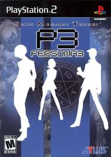

The Sonic the Hedgehog video game series is a long-running franchise developed by Sega, centered around Sonic, a blue anthropomorphic hedgehog known for his incredible speed. First introduced in 1991 as Sega's mascot and a rival to Nintendo’s Mario, the series quickly gained popularity for its fast-paced platforming gameplay, colorful graphics, and energetic music. Players typically control Sonic as he battles the evil Dr. Robotnik (also known as Dr. Eggman), who plots to conquer the world using robotic creations. Over the years, the series has expanded to include a wide cast of characters—like Tails, Knuckles, and Shadow—and has explored a variety of genres, from 2D side-scrollers to 3D action-adventure games. Despite ups and downs in critical reception, Sonic the Hedgehog remains one of the most iconic and enduring franchises in video game history.
Major Games
Sonic The Hedgehog

The first Sonic the Hedgehog game, released by Sega in 1991 for the Sega Genesis, introduced players to Sonic, a blue hedgehog with super speed, on a mission to stop the evil Dr. Robotnik from taking over the world. Robotnik has captured animals and transformed them into robotic minions to help him collect the powerful Chaos Emeralds. Set across seven vibrant zones—each divided into three acts—the game challenges players to navigate loops, springs, and hazards while freeing animals and collecting rings for protection. With its fast-paced platforming, iconic Green Hill Zone, and catchy soundtrack, the original Sonic the Hedgehog was both a critical and commercial success, helping to establish Sega as a major force in the gaming industry.
Sonic The Hedgehog 2

Sonic the Hedgehog 2, released in 1992 for the Sega Genesis, is the sequel to the original hit and expanded on its predecessor with faster gameplay, new features, and the introduction of Sonic’s sidekick, Miles “Tails” Prower, a two-tailed fox who can fly. The game follows Sonic and Tails as they race through diverse zones to stop Dr. Robotnik’s latest plan: building the Death Egg, a massive space station, and turning animals into robots to fuel his army. Featuring improved graphics, more intricate level design, the iconic “Spin Dash” move, and a two-player mode, Sonic the Hedgehog 2 became one of the best-selling Sega Genesis games and is often praised as one of the greatest platformers of its era.
Persona 2: Eternal Punishment
Persona 2: Eternal Punishment, the direct sequel to Innocent Sin, shifts focus to Maya Amano, a journalist investigating a new wave of reality-altering rumors in Sumaru City. Set in an alternate timeline where the events of Innocent Sin were erased from memory, the game explores the consequences of those lost events as Maya and her allies, including returning characters, confront a new incarnation of the Joker and a deeper conspiracy involving fate, free will, and the nature of sin. As the characters awaken their Personas and delve into their own regrets and unresolved trauma, Eternal Punishment presents a mature, emotionally layered story that challenges players with moral ambiguity and philosophical questions. The game completes the Persona 2 duology, delivering a darker, more introspective narrative that further solidifies the series’ reputation for complex storytelling.
Persona 3
Persona 3, released in 2006, marks a major evolution in the series, blending traditional dungeon-crawling RPG mechanics with a daily life simulation set in a modern Japanese high school. The story follows a silent protagonist who transfers to Gekkoukan High School and becomes involved with SEES (Specialized Extracurricular Execution Squad), a group of students fighting mysterious creatures called Shadows during a hidden hour of the day known as the "Dark Hour." Using their Personas—summoned through an intense ritual involving evoker devices—the group explores a massive tower called Tartarus while unraveling the truth behind the Dark Hour, the nature of death, and humanity’s struggle with existential despair. Persona 3 introduced the Social Link system and a darker, more philosophical tone that redefined the series, earning it critical acclaim and a lasting legacy as one of the most influential JRPGs of its time.
Persona 4

Persona 4, released in 2008, follows a group of high school students in the rural town of Inaba who become entangled in a series of mysterious murders linked to a strange alternate world inside television screens. The protagonist, a transfer student, discovers the power to summon Personas and joins forces with classmates to investigate the “Midnight Channel,” a supernatural realm where people’s hidden feelings manifest as dangerous Shadows. As they confront and accept their darker selves, the team grows closer, strengthening their bonds and abilities. Blending murder mystery, psychological introspection, and heartfelt character development, Persona 4 stands out for its balance of lighthearted slice-of-life moments with darker, emotional storytelling, and is celebrated for its memorable cast, catchy soundtrack, and deep themes of truth and self-acceptance.
Persona 5
Persona 5, released in 2016, centers on a high school student wrongfully accused of assault who transfers to Shujin Academy in Tokyo and awakens to the power of Persona after discovering a mysterious alternate realm known as the Metaverse. There, he forms the Phantom Thieves of Hearts—a group of rebellious teens who enter the distorted "Palaces" of corrupt adults to change their hearts and expose injustice in society. Balancing daily student life with covert vigilante missions, the group confronts themes of freedom, societal pressure, and personal identity, challenging a system that suppresses individuality and truth. With its bold, stylish aesthetic, turn-based combat, and deep social mechanics, Persona 5 redefined the series for a new generation, earning critical acclaim for its narrative depth, memorable characters, and striking visual design.